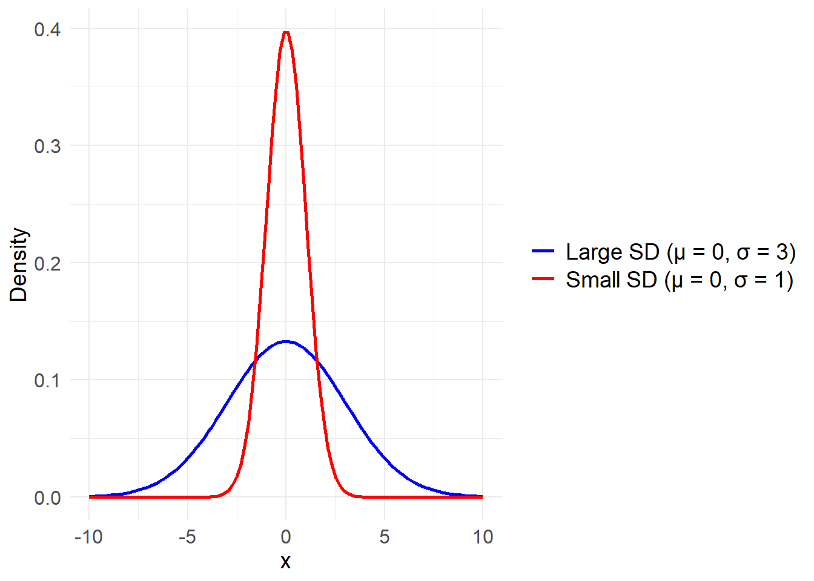

추론통계
의학 연구에서 전체 환자를 대상으로 데이터를 수집하는 것은 현실적으로 불가능한 경우가 많습니다. 추론 통계는 표본 데이터를 통해 모집단의 특성을 추정합니다.
표본 통계량 (Sample Statistics): 표본에서 계산된 평균, 표준편차, 비율 등의 통계적 수치. 이 값들은 모집단의 특성을 추정하는 데 사용됩니다.
신뢰구간 (Confidence Interval): 표본 통계량을 바탕으로, 모집단의 모수가 특정 범위 내에 있을 확률을 나타냅니다. 예를 들어, 95% 신뢰구간은 해당 구간 내에 모집단의 평균이 존재할 확률이 95%라는 것을 의미합니다.
노트
모수(母數, parametric)적 방법은 모집단이 특정한 분포를 따르고, 그 분포를 특정하는 평균(平均, mean), 분산(分散, variance) 등을 추정하는 기법임에 반해, 비모수(非母數, non-parametric) 방법은 모집단의 특정 분포를 가정하지 않고 순위(順位, ranks) 등을 사용하여 추정하는 것입니다.
정규분포
정규분포(Normal Distribution)는 다양한 데이터가 평균을 중심으로 대칭적으로 분포하는 확률분포이며 가우스분포라고도 합니다 (방정식 1 , 그림 1) .
\[ f(x) = \frac{1}{\sigma \sqrt{2\pi}} \exp\left(-\frac{(x - \mu)^2}{2\sigma^2}\right) \tag{1}\]
\(f(x)\) : 확률 밀도 함수
\(\mu\) : 평균(mean)
\(\sigma\) : 표준편차(standard deviation)
\(\sigma^2\) : 분산(variance)
정규분포는 그림 1 에서처럼 평균(\(\mu\))과 표준편차(\(\sigma\))에 따라 그 형태가 달라집니다. 이로 인해 서로 다른 정규분포를 비교하거나, 특정 데이터가 정규분포 내에서 어떤 위치에 있는지를 평가하는 것이 어렵습니다.
Z-분포
Z-분포는 정규분포에서 데이터를 표준화(standardization)하여 얻어진 분포로, 평균이 0이고 표준편차가 1인 표준정규분포입니다 (방정식 2, 그림 2).
\[
f(z) = \frac{1}{\sqrt{2\pi}} \exp\left(-\frac{z^2}{2}\right)
\tag{2}\]
\(z\): 표준화된 확률변수(Z-값)
\(f(z)\): 해당 \(z\) 값에서의 확률 밀도
\(\frac{1}{\sqrt{2\pi}}\): 정규화 상수, 전체 확률 밀도가 1이 되도록 조정
Z-분포에서 Z-값은 통계검정량(test statistic)으로 사용되며, 특정 데이터 포인트가 평균으로부터 얼마나 떨어져 있는지를 표준편차 단위로 나타냅니다. Z-값은 다음과 같이 계산됩니다: 방정식 3
\[ Z = \frac{X - \mu}{\sigma} \tag{3}\]
\(Z\): 표준화된 값 (Z-값)
\(X\): 관측된 데이터 값
\(\mu\): 모집단 평균
\(\sigma\): 모집단 표준편차
Z-분포의 활용은 다음과 같습니다.
통계적 가설 검정: Z-값을 사용하여 특정 데이터가 평균에서 얼마나 떨어져 있는지를 판단하고, 이를 바탕으로 가설 검정을 수행합니다.
신뢰구간 계산: Z-분포는 신뢰구간을 계산할 때 사용됩니다. 특정 신뢰수준에서의 Z-값을 이용해 구간을 설정합니다.
확률 계산: Z-값을 통해 특정 데이터가 주어진 정규분포에서 얼마나 자주 발생할지를 확률적으로 계산할 수 있습니다.
중심극한정리
어떤 모집단의 분포가 무엇이든 간에 표본 크기가 충분히 크면(일반적으로 \(n≥30\)) 표본 평균의 분포는 정규분포에 근사하게 된다는 것이며, 표본 평균의 분포는 모집단의 평균 \(\mu\)를 중심으로 하고, 표준오차(SE, Standard Error)인 \(\frac{\sigma}{\sqrt{n}}\)를 표준편차로 가지는 정규분포에 근사하게 됩니다 그림 3.

이를 기반으로 모평균의 95% 신뢰구간을 추정하면 다음과 같습니다: 방정식 4
\[ \overline{X} \pm Z_{\alpha/2} \cdot \frac{\sigma}{\sqrt{n}} \tag{4}\]
\(\overline{X}\) : 표본 평균
\(Z_{\alpha/2}\) : 95% 신뢰수준에서의 Z-값(약 1.96)
\(\frac{\sigma}{\sqrt{n}}\) : 표본 평균의 표준오차
위 신뢰구간 추정식은 모집단의 표준편차 \(\sigma\)를 알고 있다는 가정하에 유도되었습니다. 그러나 실제로는 모집단의 표준편차 \(\sigma\)를 알 수 없는 경우가 대부분입니다. 이 경우 \(\sigma\)를 사용할 수 없으므로 표본 표준편차 \(s\)를 사용해야 합니다. 따라서 신뢰구간 추정식은 다음과 같이 수정됩니다: 방정식 5
\[ \overline{X} \pm Z_{\alpha/2} \cdot \frac{s}{\sqrt{n}} \tag{5}\]
여기서 \(s\)는 표본 표준편차입니다.
위의 전제들은 표본의 크기가 크다는 전제가 있기 때문에 표본의 크기가 작다면 모평균을 추정이 제한적이게 됩니다.
t-분포
t-분포는 1908년, 영국의 통계학자 윌리엄 고셋에 의해 처음으로 개발되었습니다. 당시 고셋은 맥주 양조 회사인 기네스(Guinness)에서 일하고 있었고, 소규모 실험에서 발생하는 불확실성을 다루기 위해 새로운 통계적 방법을 개발할 필요가 있었습니다.
필명 ‘Student’: 고셋은 회사의 기밀 유지 정책 때문에 자신의 이름을 사용하지 못했고, 대신 ‘Student’라는 필명으로 논문을 발표했습니다. 그래서 t-분포는 종종 Student’s t-distribution이라고 불립니다.
고셋은 정규분포와 카이제곱분포의 관계를 사용하여 t-분포를 도출했습니다. 카이제곱분포는 정규분포에서 도출된 분포로, 모집단의 분산을 모를 때 표본 분산을 통해 도출됩니다.
표본 평균이 정규분포를 따르며, 표본 분산이 독립적인 카이제곱분포를 따른다는 사실에 기초해 t-분포를 수학적으로 유도했습니다 방정식 6.
노트
이는 t-검정에서는 모집단이 정규분포를 따른다는 가정을 전제하고 있음을 시사합니다.
\[ f(t) = \frac{\Gamma\left(\frac{\nu + 1}{2}\right)}{\sqrt{\nu \pi} \, \Gamma\left(\frac{\nu}{2}\right)} \left(1 + \frac{t^2}{\nu}\right)^{-\frac{\nu + 1}{2}} \tag{6}\]
여기서:
\(t\): t-분포의 확률변수
\(\nu\): 자유도(degrees of freedom)
\(\Gamma\): 감마 함수 (Gamma function),
\(\Gamma(n)\)은 \((n-1)!\)과 동일한 의미를 가짐
이 수식에서 t-분포의 모양은 자유도 \(\nu\)에 따라 달라지며, 자유도가 클수록 t-분포는 표준정규분포에 가까워집니다.
\(\nu\)가 작을수록, t-분포의 꼬리 부분이 더 두터워져서 극단적인 값이 나올 확률이 더 높습니다.
\(\nu\)가 무한대로 커지면, t-분포는 표준정규분포와 동일하게 됩니다.
t-통계량은 다음과 같이 정의됩니다: 방정식 7
\[ t = \frac{\overline{X} - \mu}{\frac{s}{\sqrt{n}}} \tag{7}\]
\(\overline{X}\) : 표본 평균,
\(\mu\) : 모집단 평균,
\(s\) : 표본 표준편차,
\(n\) : 표본 크기입니다.
t-통계량의 의미는 다음과 같습니다.
표본평균과 모평균의 비교:
t-통계량은 표본평균과 가설에서 설정한 모집단 평균 \(\mu\) 간의 차이가 표본 표준오차(SE) 대비 얼마나 큰지를 나타냅니다. 즉, t-값은 표본평균이 모집단 평균과 얼마나 떨어져 있는지를 표준오차의 단위로 표현한 값입니다.
가설 검정에서의 사용:
t-분포를 이용한 가설 검정에서는 계산된 t-값과 t-분포의 임계값을 비교하여 귀무가설을 기각할지 결정합니다. 예를 들어, t-값이 t-분포의 임계값을 벗어나면, 두 평균 간에 유의미한 차이가 있다고 판단하고 귀무가설을 기각합니다.
자유도와 t-분포:
t-통계량은 t-분포를 따르며, 이 t-분포의 모양은 자유도(degrees of freedom, df)에 따라 달라집니다. 자유도는 일반적으로 \(n - 1\)로 계산되며, 표본 크기가 커질수록 t-분포는 표준정규분포에 가까워집니다. 표본 크기가 작을 때는 t-분포의 꼬리가 더 두터워지며, 이는 극단적인 t-값이 나올 가능성을 더 잘 반영합니다.
t-값의 해석:
t-값이 크면 클수록 표본평균과 모집단 평균 간의 차이가 크다고 해석됩니다. t-값이 0에 가까울수록 표본평균이 모집단 평균과 유사하다는 의미입니다.
t-분포를 이용한 모평균 신뢰구간
t-분포를 이용하여 모평균의 신뢰구간을 구하는 식은 다음과 같습니다: 방정식 8
\[ \overline{X} \pm t_{\alpha/2, \, df} \cdot \frac{s}{\sqrt{n}} \tag{8}\]
여기서 각 요소는 다음을 의미합니다:
\(\overline{X}\) : 표본 평균
\(t_{\alpha/2, \, df}\) : 신뢰수준 \(\alpha\)에 해당하는 t-값, 자유도 \(df\) (일반적으로 \(df = n - 1\))에 따라 결정
\(s\): 표본 표준편차
\(n\): 표본 크기
\(\frac{s}{\sqrt{n}}\): 표준오차(SE), 표본 평균이 모집단 평균을 얼마나 잘 추정하는지를 나타냄
예를 들어, 표본 크기가 \(n = 25\), 표본 평균이 \(\overline{X} = 100\), 표본 표준편차가 \(s = 10\)이며, 95% 신뢰구간을 계산하려고 한다면, \(t_{\alpha/2, \, 24}\) 값을 찾고 이 식을 사용하여 신뢰구간을 계산할 수 있습니다.
두 평균의 비교
모평균 추정에서 t-분포 통계량인 t를 산출하는 것은 모평균과 표본평균의 차이를 표준오차로 보정하여 구하지만, 두 평균의 비교(t-검정)에서는 두 평균의 차이를 보정할 때 두 표본의 분산이 모두 사용되므로 결합분산(pooled variance)을 이용하여 보정하게 됩니다 방정식 9.
노트
이때 결합분산은 두 모집단의 분산이 같다는 가정하에 계산됩니다.
\[ t = \frac{\overline{X}_1 - \overline{X}_2}{\sqrt{s_p^2 \left(\frac{1}{n_1} + \frac{1}{n_2}\right)}} \tag{9}\]
여기서: - \(\overline{X}_1\), \(\overline{X}_2\) 는 각각 두 표본의 평균입니다. - \(n_1\), \(n_2\) 는 각각 두 표본의 크기입니다. - \(s_p^2\)는 두 표본의 결합분산(pooled variance)으로, 다음과 같이 계산됩니다: 방정식 10
\[ s_p^2 = \frac{(n_1 - 1)s_1^2 + (n_2 - 1)s_2^2}{n_1 + n_2 - 2} \tag{10}\]
여기서 \(s_1^2\)와 \(s_2^2\)는 각각 두 표본의 분산입니다.
R에서의 t-검정
기본적으로 t.test() 함수를 사용하여 수행할 수 있습니다. t-검정에는 단일 표본 t-검정, 독립 표본 t-검정, 대응 표본 t-검정이 있습니다. R에서 t.test() 함수의 주요 인자는 벡터입니다. t.test() 함수는 기본적으로 두 가지 벡터를 입력받아 두 그룹 간의 평균 차이를 비교합니다. 다음은 t.test() 함수의 주요 인자들과 그 설명입니다:
1. x (필수 인자)
첫 번째 그룹의 데이터를 나타내는 벡터입니다.
예시:
t.test(x = c(5, 6, 7, 8, 9))
2. y (선택적 인자)
두 번째 그룹의 데이터를 나타내는 벡터입니다.
만약
y인자를 제공하지 않으면,t.test()는 단일 표본 t-검정을 수행합니다.예시:
t.test(x = c(5, 6, 7, 8, 9), y = c(10, 11, 12, 13, 14))
3. alternative (선택적 인자)
대립가설의 형태를 지정합니다.
"two.sided","greater","less"중 하나를 사용할 수 있습니다.기본값은
"two.sided"입니다.
4. mu (선택적 인자)
- 단일 표본 t-검정에서 가설 검정의 기준이 되는 모집단 평균을 지정합니다. 기본값은
mu = 0입니다.
5. paired (선택적 인자)
두 벡터가 짝지어진 데이터인지 여부를 지정합니다.
TRUE로 설정하면 대응 표본 t-검정을 수행합니다. 기본값은FALSE입니다.
6. var.equal (선택적 인자)
두 벡터의 분산이 같다고 가정할지를 지정합니다.
TRUE로 설정하면 분산이 동일하다고 가정하며 Student의 t-검정을 수행합니다. 기본값은FALSE이며, 이 경우 Welch의 t-검정이 수행됩니다.
7. conf.level (선택적 인자)
- 신뢰구간의 신뢰수준을 지정합니다. 기본값은
0.95(95% 신뢰수준)입니다.
단일 표본 t-검정 (One-Sample t-test)
단일 표본 t-검정은 한 표본의 평균이 특정 값과 다른지를 검정하는 데 사용됩니다.
예시 코드와 실행결과 (여기서 mu는 비교하고자 하는 모집단 평균입니다.)
# 예시 데이터
data <- c(5.2, 4.9, 6.3, 5.8, 5.4, 5.7, 5.1)
# 단일 표본 t-검정
t.test(data, mu = 5.5)
One Sample t-test
data: data
t = -0.078567, df = 6, p-value = 0.9399
alternative hypothesis: true mean is not equal to 5.5
95 percent confidence interval:
5.040799 5.930630
sample estimates:
mean of x
5.485714 독립 표본 t-검정 (Independent Two-Sample t-test)
독립 표본 t-검정은 두 독립된 그룹 간의 평균 차이를 검정하는 데 사용됩니다. 그룹 간의 분산이 같다고 가정하는 경우와 그렇지 않은 경우에 따라 달라집니다.
예시 코드와 실행결과
# 예시 데이터
group1 <- c(6.1, 5.9, 6.3, 6.5, 6.0)
group2 <- c(5.8, 5.7, 5.9, 6.0, 5.6)
# 독립 표본 t-검정
t.test(group1, group2)
Welch Two Sample t-test
data: group1 and group2
t = 2.7941, df = 6.908, p-value = 0.02711
alternative hypothesis: true difference in means is not equal to 0
95 percent confidence interval:
0.054515 0.665485
sample estimates:
mean of x mean of y
6.16 5.80 - 기본적으로, t.test() 함수는 두 그룹 간의 분산이 같다고 가정하지 않습니다. 만약 분산이 같다고 가정하려면 var.equal = TRUE 인자를 추가합니다.
# 분산이 같다고 가정한 t-검정
t.test(group1, group2, var.equal = TRUE)
Two Sample t-test
data: group1 and group2
t = 2.7941, df = 8, p-value = 0.02341
alternative hypothesis: true difference in means is not equal to 0
95 percent confidence interval:
0.06289215 0.65710785
sample estimates:
mean of x mean of y
6.16 5.80 대응 표본 t-검정 (Paired t-test)
대응 표본 t-검정은 같은 대상에서 두 번의 측정을 수행한 결과(예: 치료 전후)를 비교하는 데 사용됩니다.
예시 코드와 실행결과
# 예시 데이터
before <- c(5.5, 5.7, 5.8, 5.9, 5.6)
after <- c(6.0, 5.8, 6.2, 6.1, 6.0)
# 대응 표본 t-검정
t.test(before, after, paired = TRUE)
Paired t-test
data: before and after
t = -4.3546, df = 4, p-value = 0.01211
alternative hypothesis: true mean difference is not equal to 0
95 percent confidence interval:
-0.5240262 -0.1159738
sample estimates:
mean difference
-0.32 - 여기서 paired = TRUE 인자는 두 표본이 짝을 이루고 있음을 지정합니다.
t-검정 결과 해석
t.test() 함수의 결과는 다음과 같은 요소들을 포함하는 리스트로 반환됩니다:
t-value: t-통계량 값
df: 자유도 (degrees of freedom)
p-value: p-값, 귀무가설을 기각할지 여부를 결정하는 데 사용됩니다.
conf.int: 지정된 신뢰수준에 대한 신뢰구간
mean of x/y: 각 그룹의 평균 예시 결과:
# 결과 예시
t.test(group1, group2)
Welch Two Sample t-test
data: group1 and group2
t = 2.7941, df = 6.908, p-value = 0.02711
alternative hypothesis: true difference in means is not equal to 0
95 percent confidence interval:
0.054515 0.665485
sample estimates:
mean of x mean of y
6.16 5.80 - 이 결과를 해석할 때, p-값이 유의수준(예: 0.05)보다 작으면 귀무가설을 기각하고, 두 그룹 간의 평균에 유의미한 차이가 있다고 결론지을 수 있습니다.
Welch t-검정
- 이질적 분산: 두 그룹의 분산이 서로 다를 수 있다는 가정을 전제로 합니다. 이는 데이터가 다양한 조건에서 수집된 경우에 특히 유용합니다.
- 자유도의 조정: Welch t-검정은 자유도를 조정하여 두 그룹의 분산이 다를 때 표본 크기와 분산의 차이를 반영합니다. 자유도는 두 그룹의 분산과 표본 크기에 따라 달라지며, 다음과 같은 식으로 계산됩니다:
\[ df = \frac{\left(\frac{s_1^2}{n_1} + \frac{s_2^2}{n_2}\right)^2}{\frac{\left(\frac{s_1^2}{n_1}\right)^2}{n_1 - 1} + \frac{\left(\frac{s_2^2}{n_2}\right)^2}{n_2 - 1}} \]
여기서:
\(s_1^2\), \(s_2^2\)는 각각 두 그룹의 표본 분산,
\(n_1\), \(n_2\)는 각각 두 그룹의 표본 크기입니다.
- 비대칭적 신뢰구간: Welch t-검정은 t-분포를 따르지 않으며, 신뢰구간이 비대칭적일 수 있습니다. 이는 데이터의 분포가 비대칭적일 때 더 정확한 신뢰구간을 제공합니다.
Welch t-검정의 t-통계량은 다음과 같이 계산됩니다: 방정식 11
\[ t = \frac{\overline{X}_1 - \overline{X}_2}{\sqrt{\frac{s_1^2}{n_1} + \frac{s_2^2}{n_2}}} \tag{11}\]
여기서:
\(\overline{X}_1\)와 \(\overline{X}_2\)는 각각 두 그룹의 표본 평균,
\(s_1^2\)와 \(s_2^2\)는 각각 두 그룹의 표본 분산,
\(n_1\)와 \(n_2\)는 각각 두 그룹의 표본 크기입니다.
R에서의 Welch t-검정 수행 방법 R에서 Welch t-검정을 수행하기 위해 t.test() 함수를 사용합니다. 기본적으로 t.test() 함수는 두 집단의 분산이 같지 않다고 가정하여 Welch t-검정을 수행합니다.
# 두 그룹의 데이터 생성
group1 <- c(6.1, 5.9, 6.3, 6.5, 6.0)
group2 <- c(5.8, 5.7, 5.9, 6.0, 5.6)
# Welch t-검정 수행
result <- t.test(group1, group2)
# 결과 출력
print(result)
Welch Two Sample t-test
data: group1 and group2
t = 2.7941, df = 6.908, p-value = 0.02711
alternative hypothesis: true difference in means is not equal to 0
95 percent confidence interval:
0.054515 0.665485
sample estimates:
mean of x mean of y
6.16 5.80 Mann-Whitney U-검정
Wilcoxon의 기초 작업
1945년: 프랭크 윌콕슨(Frank Wilcoxon)이 비모수적 방법을 기반으로 두 그룹 간의 차이를 비교하는 Wilcoxon 순위합 검정을 처음으로 제안했습니다. Wilcoxon의 접근법은 두 집단 간의 차이를 순위로 변환하여 순위 합을 비교하는 것이었으며, 이는 정규분포를 가정하지 않고도 두 독립된 표본 간의 차이를 평가할 수 있는 중요한 방법으로 자리 잡았습니다.
Mann과 Whitney의 확장
1947년: 헨리 B. 만(Henry B. Mann)과 도로시 로빈스 와이트니(Dorothy Robbins Whitney)는 Wilcoxon의 순위합 검정을 확장하고 일반화했습니다. Mann과 Whitney는 두 독립된 표본의 순위를 비교하는 새로운 방법을 제안했으며, 이 방법은 Mann-Whitney U 검정으로 알려지게 되었습니다.
이 검정법은 두 그룹 간의 차이를 평가하기 위해 U 통계량을 도입했습니다. U 통계량은 두 그룹의 순위를 비교하여 계산되며, 두 그룹이 동일한 분포를 따를 경우 U 통계량의 기대값이 계산됩니다. 귀무가설이 참일 때 이 U 통계량의 분포는 알려진 분포를 따르며, 이를 통해 p-값을 계산할 수 있습니다.
비모수적 방법의 중요성
Mann-Whitney U 검정의 개발은 비모수적 방법의 중요성을 강조했습니다. 정규분포를 가정하지 않고도 데이터를 분석할 수 있는 방법을 제공했으며, 이는 특히 작은 표본이나 비정규 분포의 데이터를 다루는 데 매우 유용했습니다.
Mann-Whitney U 검정은 데이터의 실제 값이 아닌 순위를 사용하여 통계적 검정을 수행하므로, 이상값(outliers)이나 비대칭 분포의 영향을 덜 받습니다. 이 검정은 두 그룹 간의 차이를 비교할 때, 중앙값의 차이에 대한 강력한 비모수적 대안으로 널리 사용됩니다.
Mann-Whitney U 검정의 계산 과정:
첫 번째 그룹에 대한 U 통계량:
\[ U_1 = R_1 - \frac{n_1 (n_1 + 1)}{2} \]
두 번째 그룹에 대한 U 통계량:
\[ U_2 = R_2 - \frac{n_2 (n_2 + 1)}{2} \]
여기서:
- \(R_1\)과 \(R_2\)는 각각 첫 번째와 두 번째 그룹의 순위 합,
- \(n_1\)과 \(n_2\)는 각각 첫 번째와 두 번째 그룹의 표본 크기입니다.
최종적으로 두 값 중 작은 U 통계량이 선택되며, 이 값에 따라 두 그룹 간의 차이가 유의미한지를 판단합니다.
# 필요한 패키지 로드
library(ggplot2)
# 정규분포를 따르지 않는 두 그룹 데이터 생성
set.seed(123)
group1 <- rexp(30, rate = 0.2) # 지수분포
group2 <- rexp(30, rate = 0.3) + 2 # 다른 지수분포 + 상수로 이동
# t-검정 수행
t_test_result <- t.test(group1, group2)
t_test_p_value <- t_test_result$p.value
# Mann-Whitney U 검정 수행
u_test_result <- wilcox.test(group1, group2)
u_test_p_value <- u_test_result$p.value
# 결과 출력
cat("t-검정 p-값:", t_test_p_value, "\n")t-검정 p-값: 0.1227817 cat("Mann-Whitney U 검정 p-값:", u_test_p_value, "\n")Mann-Whitney U 검정 p-값: 0.03576713 # 두 그룹의 분포를 히스토그램으로 시각화
df <- data.frame(
value = c(group1, group2),
group = factor(c(rep("Group 1", 30), rep("Group 2", 30)))
)
p <- ggplot(df, aes(x = value, fill = group)) +
geom_histogram(position = "identity", alpha = 0.6, bins = 15) +
theme_minimal() +
labs(title = "Comparison of Two Non-Normal Distributions",
x = "Value", y = "Frequency") +
theme(legend.position = "top")
# 그래프 출력
print(p)